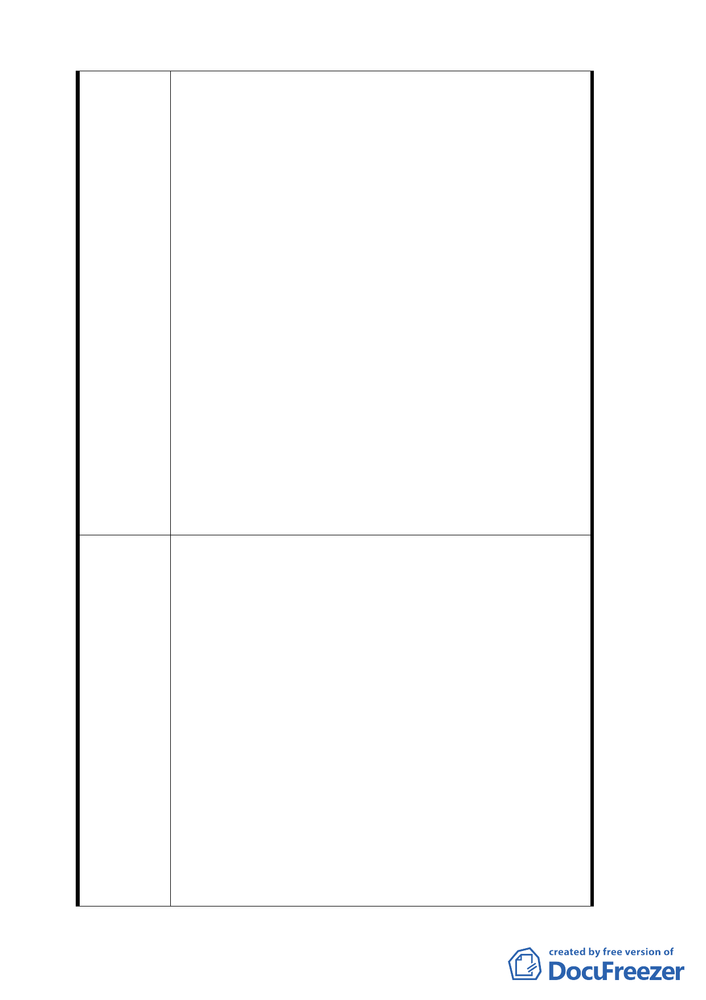

建議辦法
發展及土地所有權人權益，都市計畫實有檢討之必要性；另計
畫區現況都市發展寙陋，並考量當地居民意願，本案併予運用
劃定為「都市更新地區」方式及整體開發範圍，以加速本計畫
範圍內都市居住環境之改善及公共利益增進，有效促進該地區
之發展及合理土地使用，爰辦理本變更計畫，以促使地區之更
新建設。
3.計畫內容摘要
北投第二號機關用地經本府目的事業主管機關檢討已無開闢之
需求，故配合變更都市計畫，俾使土地得以開發，改善都市環
境，並考量光明路沿線商業活動熱絡，亦為串連新、舊北投地
區商業活動之重要路線，故擬規劃為商業區帶動地區之更新發
展，延續光明路沿線之商業活動。
配合商業區劃設之完整性，原機關用地西側部分住宅區（道路
用地）併同調整使用分區。
4. 辦理情形
為本案變更作業之順遂，本府於八十九年至九十一年間邀集土
地所有權人及當地住戶，針對計畫內容及開發方式召開七次協
調會議，並已獲致共識。
本案經於九十二年三月六日召開專案小組審查會議，研獲結論
如下：1.有關警察局派出所之區位，由於原址重建影響商業區
之連續性及發展，依目前府內協調之結果，以另覓適當地點或
維持公展計畫位址考量方向。2.本計畫範圍同意依公展計畫劃
定更新地區及更新單元，有關開發主體建議另行協調促成。
本案經依專案小組結論研析後，續提委員會議審議，經九十二
年六月十三日第五一三次委員會議決議修正通過。
一、 政府依法以公正立場行使公權力，辦理整體規劃及區段徵收
開發。
1. 現有永建國小校地如何處理，應納入整體規劃，不應成為
市政府可另行處分之財產。建議劃入區段徵收，參與土地
重新整理分配。或者，將現有校地變更為行政區，供台北
市政府與國民黨以地換地。
2. 下崙路兩側各一處「機關用地」，現為臺彎電力公司使用，
北側作交通車停車場，南側作材料堆放場與讀書室。建議
應納入整體規劃，以期計畫完整與公允。
二、 土地使用規劃及開發，請重視環境影響評估與環境保護。
1. 毗鄰木柵公園之山谷地，建議考量水土保持、自然景觀及
人文發展史蹟，劃為文教用地，以保留原水文地貌與兼顧
公益活動需求。
2. 本計畫增加「住宅區」4.66 公頃，可建築樓地板約十萬平
方公尺，住宅戶數約一千戶，容納人口四千餘人。勢必造
成巨大的環境衝擊，尤其是交通的影響。對外交通維一之
主要道路，木柵路已不堪負荷，建議適當縮減「住宅區」
面積。
3. 下崙路與光輝路銳角交叉路口，形成狹長三角形街廓，公
園與住宅交錯。建議納入整體規劃範圍，一併檢討改善。
24